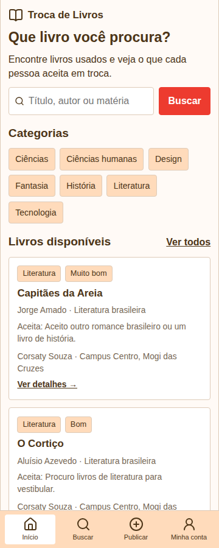
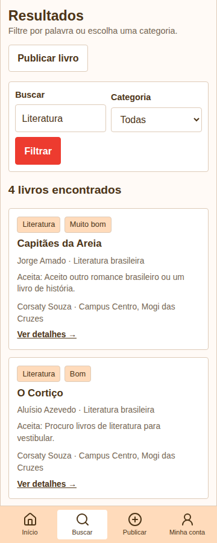
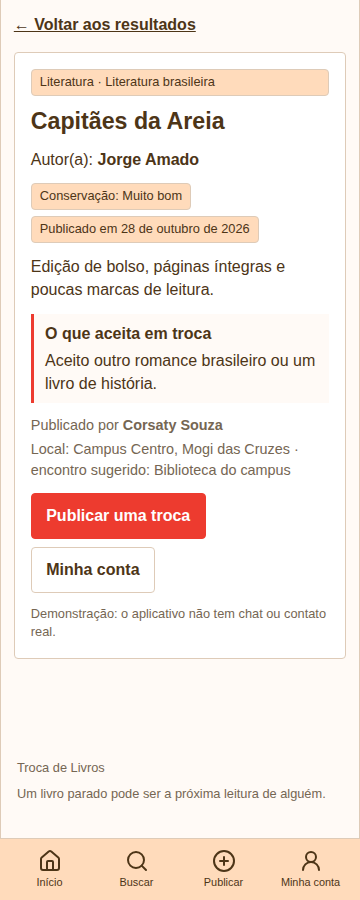
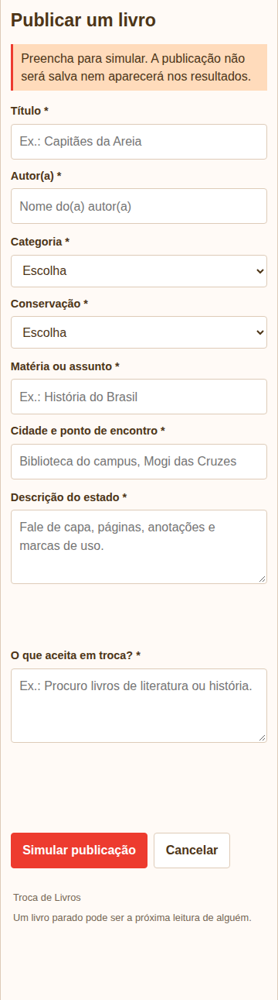
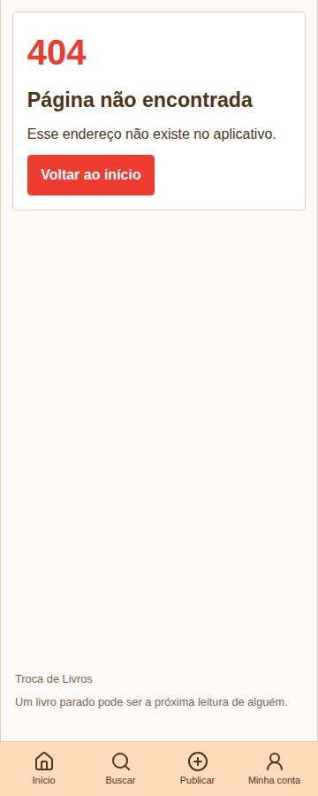
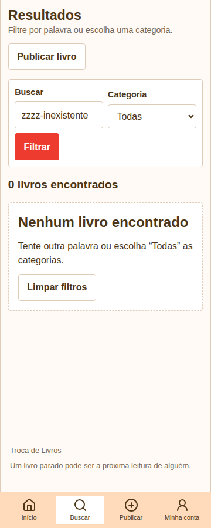
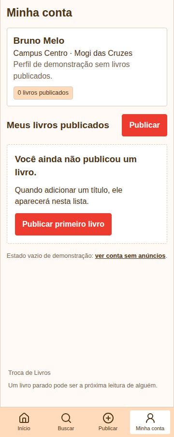

1. Procurar para uma disciplina
Uma pessoa pesquisa título ou matéria, filtra os resultados e confere conservação e local antes de combinar a troca.
Desafio 1 · O mesmo esqueleto, outro negócio
Relatório de construção do aplicativo · Tema escolhido pelo grupo
O aplicativo responde à pergunta: “Onde encontro o livro que preciso, em bom estado e com uma troca que vale a pena?” Ele aproxima quem procura um livro de quem tem um exemplar parado, mostrando assunto, conservação, proposta de troca e local de encontro.
Uma pessoa pesquisa título ou matéria, filtra os resultados e confere conservação e local antes de combinar a troca.
Quem já leu um romance publica o exemplar e informa que tipo de livro aceitaria em troca.
Uma visitante abre uma categoria, compara livros e consulta quem publicou cada anúncio.
| No KiOferta | No Troca de Livros | Como aparece no aplicativo |
|---|---|---|
| Produto | Livro procurado | Título, autor, matéria e categoria. |
| Oferta | Anúncio de um exemplar | Livro disponível, com estado e proposta de troca. |
| Mercado | Publicador e ponto de encontro | Quem anuncia, campus/cidade e local combinado. |
| Preço | Condição e proposta de troca | Conservação do exemplar e o que a pessoa aceita receber. |
| Distância | Local de encontro | Campus, cidade ou ponto informado no anúncio. |
| Contribuinte | Publicador | Usuário mockado responsável pelo anúncio. |
| Visitante | Leitor que consulta | Pessoa que pesquisa sem fazer login. |
Construção
src/
├── index.html
├── css/
│ ├── tokens.css, base.css, style.css
│ ├── navbar/navbar.css
│ ├── componentes/cartaoLivro.css
│ └── paginas/ (um CSS por tela)
└── js/
├── main.js
├── rotas/rotas.js
├── navbar/navbar.js
├── dadosMockados/ (livros, publicadores, usuarios)
├── componentes/cartaoLivro.js
└── paginas/ (seis módulos de tela)
| Arquivos | Papel |
|---|---|
| main.js / rotas.js | Escutam hashchange, localizam rota e entregam parâmetros à tela; a lista única descreve todas as páginas. |
| navbar.js | Gera o menu a partir das rotas com label preenchido. |
| dadosMockados/ | Fornece 12 anúncios, 4 publicadores e 5 usuários de demonstração. |
| paginas/ e CSS | Separaram as seis telas e seus estilos; cartaoLivro.js reutiliza o cartão nos resultados e na conta. |
Foram preservados o shell de página única, o roteador por hash, o menu gerado pelas rotas e a separação em módulos, reorganizando apenas os caminhos exigidos pelo enunciado.
Busca, categoria e ID de detalhe viajam no hash. Assim, o roteador identifica a tela e o F5 abre o mesmo endereço com seus parâmetros.
Estado do livro, proposta e ponto de encontro ficam visíveis nos cartões e no detalhe; busca por texto e categoria podem ser combinadas.
Um chat facilitaria a negociação, mas exigiria serviços e persistência fora do escopo: esta atividade usa dados mockados e não exige backend nem login real.
Revisar estas decisões com o grupo para refletir o processo efetivamente apresentado por vocês.
Registro do grupo
Preencher com a divisão real e com números conferidos em git log. Corsaty Souza é o único integrante informado até agora.
| Integrante | Responsabilidade/entregáveis reais | Commits |
|---|---|---|
| Corsaty Souza | [Preencher de acordo com o trabalho realizado] | [Hashes reais] |
| [Integrante 2] | [Preencher de acordo com o trabalho realizado] | [Hashes reais] |
| [Integrante 3] | [Preencher de acordo com o trabalho realizado] | [Hashes reais] |
Dificuldade 1 — completar pelo grupo: erro que apareceu: [descrever]; o que pensávamos que era: [descrever]; o que era de fato: [descrever].
Dificuldade 2 — completar pelo grupo: erro que apareceu: [descrever]; o que pensávamos que era: [descrever]; o que era de fato: [descrever].
Os campos permanecem em aberto porque dificuldades e causas precisam corresponder a erros que realmente aconteceram durante o trabalho do grupo.
O protótipo não tem backend, banco de dados, login real, chat, envio de fotos, negociação confirmada ou persistência após F5. Os dados são mockados em JavaScript e novos anúncios vivem apenas na memória da sessão. Essas lacunas foram mantidas explícitas para respeitar o escopo didático, em vez de simular serviços que o app não possui.
Antes da entrega, completar R5 e R6, inserir os outros nomes e validar R4 com o grupo.
Capturas · viewport de 360px




Capturas · viewport de 360px


